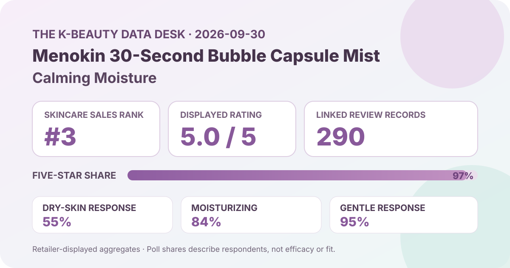
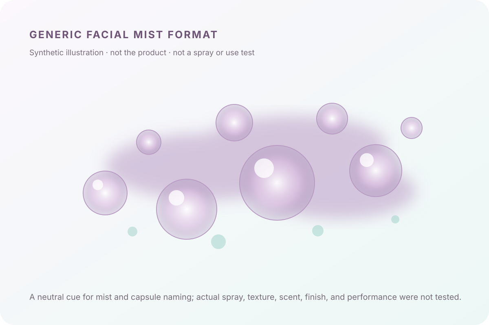

Data captured September 30, 2026. This is an independent analysis of retailer-displayed product information and anonymous aggregate review signals. I did not test the product, and no individual review, reviewer name, product photograph, or user photograph is copied or translated.

The short version: Menokin 30-Second Quick Glow Bubble Capsule Mist Calming Moisture appeared at number 3 in Olive Young Korea's live skincare sales ranking. The product header and detailed review view both displayed 5.0 out of 5 from 290 review records. The detail panel showed a 97% five-star share, while the largest shopper-poll responses were dry skin at 55%, moisturizing at 84%, and gentle at 95%. These are favorable but still limited storefront signals—not proof of glow, calming, hydration, quick absorption, makeup compatibility, or individual tolerance.
A displayed 5.0 average can look absolute, but it is still a rounded score from a particular retail feedback pool. The separate star distribution adds useful resolution: 97% of the displayed selections were five-star, 2% were four-star, and 1% were three-star. The lower two categories each rounded to 0%. That is a clearly top-heavy pattern, but it is not literally unanimous.
The review base of 290 is large enough to be more informative than a single-record launch page, yet it is modest compared with long-running listings that carry tens of thousands of records. A new promotion, gifting campaign, launch window, or concentrated early-adopter audience can shape the pool. The capture cannot separate verified purchases from other eligible participation, and the page does not expose how many people saw the product but chose not to review it.
Rounded 0% does not prove that nobody selected one or two stars; it means the interface displayed those shares as zero at the precision shown. The percentages total 100%, but that arithmetic does not reveal the exact integer count behind every category. Nor does it show whether all records refer to the same 98 ml plus 30 ml set, packaging, price, or campaign.
Dry skin was the largest displayed skin-type response at 55%, followed by combination skin at 38% and oily skin at 7%. That describes the respondents represented in the poll. It does not establish that the mist works best for dry skin, and it does not show how shoppers classified their skin, whether their skin changed by season, or whether the poll included every reviewer.
Moisturizing was the dominant displayed concern response at 84%, with soothing at 14% and wrinkle/brightening at 2%. These are interface categories, not measurements. An 84% moisturizing response cannot be converted into a measured increase in skin hydration, a duration of effect, or proof that the product prevents dryness. Likewise, the 14% soothing share is not evidence that inflammation, redness, or a skin condition improved.
The irritation panel showed 95% selecting the gentle response, 5% ordinary, and 0% felt irritation. This is a strong perception signal within the captured poll, but it cannot guarantee tolerance. The exact denominator was not displayed, and the page does not provide standardized patch testing, diagnoses, ingredient sensitivities, or exposure conditions. A rounded 0% felt-irritation share should never be read as zero risk.

The retailer categorized the listing as a facial mist and used “bubble capsule mist” language in the product name. That supports a general mist-format description only. I did not shake the bottle, inspect phase separation, spray it, measure droplet size, apply it before skincare, use it over makeup, smell it, or evaluate how it dries.
The words “30-second,” “quick glow,” “calming,” and “moisture” should be treated as product naming or positioning unless supported by separate evidence. The captured retailer aggregates do not verify a 30-second result, a measurable glow change, a calming mechanism, or an increase in hydration. The rating can show that the feedback pool was favorable; it cannot validate the mechanism implied by a name.
The local illustration is deliberately abstract and brand-neutral. Floating translucent circles suggest the broad “capsule” concept, while a mist cloud signals the format. It does not imitate the real bottle or formula and should not be used to predict spray fineness, oil content, tack, finish, layering, or the appearance of the actual liquid.
The captured detailed review view exposed the rating, total, star distribution, and three shopper polls. It did not expose a reliable retailer-level anonymous theme summary or a stable positive-classification percentage. For that reason, this article does not generalize topics from a handful of visible reviews and does not present individual comments as if they represented all 290 records.
This distinction matters. A visible review feed is not the same as an aggregate summary, and copying or translating selected comments would overweight a tiny, non-random subset. Reviewer names, profile labels, photographs, and original text were not collected for publication. The analysis stays with the interface-level totals that can be described consistently.
The captured title described a 98 ml product plus a 30 ml extra. The header showed a ₩31,000 reference price and a ₩21,300 promotional price, with the interface displaying a 31% reduction. That offer can change with time, stock, membership, coupons, delivery method, or campaign terms, so it is not a permanent value judgment.
Rank three indicates strong current sales visibility within Olive Young Korea's skincare ranking on the capture date. It does not mean third-best skincare overall, third-best facial mist, or third-best for dry skin. Rank can move with discounts, inventory, ad placement, launches, bundles, celebrity campaigns, and the exact category filter. The accumulated review count and the live sales rank measure different things and should not be combined into a performance score.
This analysis did not independently capture and reconcile a complete current ingredient list for every package or market. No ingredient concentration, delivery system, molecular size, capsule composition, or clinical activity is inferred from the product name, price, bubbles, rating, or mist format. The words “capsule” and “calming” do not establish what is encapsulated or whether a medically meaningful effect occurs.
No claim is made that the product is fragrance-free, alcohol-free, oil-free, non-comedogenic, hypoallergenic, pregnancy-compatible, fungal-acne-safe, or appropriate for eczema, rosacea, acne, allergy, broken skin, or another medical concern. Check the current regional package and authorized label for ingredients, directions, and warnings. A clinician or pharmacist can help with a known condition, prescription interaction, or history of severe reactions.
The captured product header and detailed review view both displayed 5.0 out of 5 from 290 linked records. The separate chart showed 97% five-star, so the average is highly favorable but not evidence of unanimous ratings or guaranteed results.
Dry skin led the displayed poll at 55%, followed by combination at 38% and oily at 7%. The values describe representation among poll responses rather than a suitability ranking.
No. It is a rounded aggregate perception response from an unspecified poll denominator. Individual ingredients, routines, skin conditions, and exposure can differ, and a retailer poll cannot predict one person's tolerance.
This analysis did not test the product. “30-second,” “quick glow,” and “calming moisture” are listing language, while ratings and polls are not standardized measurements of timing, glow, inflammation, or hydration.
No. It is a generic code-drawn editorial visual with no product, package, reviewer, or use-test content.
Menokin 30-Second Quick Glow Bubble Capsule Mist Calming Moisture was the first valid unpublished family in the captured skincare ranking, appearing at number three after two covered La Roche-Posay products were skipped. Its ranking and detail names agreed, and both the product header and detailed review view showed 5.0 from 290 records without a loading or access-block signal.
The available aggregate pattern is favorable: 97% five-star, with leading poll responses of 55% dry skin, 84% moisturizing concern, and 95% gentle. The smaller 290-record base, unknown poll denominators, rounded shares, lack of a reliable anonymous theme summary, and absence of product testing keep the conclusion narrow. Verify the exact set, current price, regional formula, directions, and personal compatibility separately from popularity.
← All K-Beauty Data Desk reviews · Best-seller rankings · Skin-poll representation · About & methodology
The analysis is based on the dated retailer product page captured on 2026-09-30. Open the source listing.
Published by The K-Beauty Data Desk · Aggregate data captured 2026-09-30. No individual review text, reviewer name, product photo, or user photo is reproduced or translated. I did not test the product and received no product or payment for this coverage.